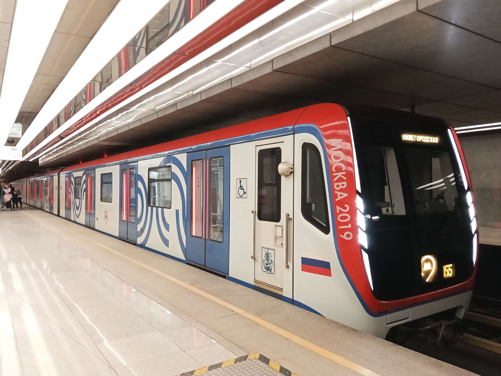

81-765.4/766.4/767.4 «Москва-2019»
«Москва-2019» — это глубоко модернизированная версия базового семейства электровагонов «Москва» (81-765/766/767). Всего было построено 52 восьмивагонных состава (416 вагонов), которые производятся на заводах «Метровагонмаш» (Мытищи) и ОЭВРЗ (Санкт-Петербург).
С декабря 2018 года заводом «Метровагонмаш» было начато серийное производство новой модификации .4. Помимо изменений в отделке и оснащении пассажирского салона, вагоны этой модификации стали оснащаться усовершенствованной системой электродинамического торможения, позволяющей тормозить до полной остановки без применения пневматических фрикционных тормозов. Это делает остановку более плавной и тихой. В январе 2019 года прошли их первичные заводские испытания, где проверялась работа нового электрооборудования, после чего вагоны стали поступать заказчику.
Основные технические характеристики
| Параметр | Значение |
|---|---|
| Ширина колеи / Род тока | 1520 мм / 750 В постоянного тока (нижний токосъем) |
| Конструкционная скорость | 90 км/ч |
| Максимальное ускорение | 1,3 м/с² |
| Тяговый привод | Асинхронный КАТП-3 на IGBT-транзисторах |
| Мощность тяговых двигателей | 4 × 170 кВт на каждый моторный вагон |
| Длина вагона (по автосцепкам) | 20 120 мм (головной) / 19 140 мм (промежуточный) |
| Ширина / Высота вагона | 2684 мм / 3670 мм |
| Ширина дверного проема | 1380–1400 мм |
| Масса тары вагона | 38 т (765.4) / 36 т (766.4) / 29 т (767.4) |
| Вместимость 8-вагонного состава | До 1474 человек (при плотности 5 чел/м²) |
| Установленный срок службы | 31 год |
Ключевые отличия от базовой модели
🎨 Новый дизайн
Изменена форма лобовой части головного вагона, установлен новый обтекатель головки автосцепки и изменена схема окраски кузова. Также обновлен дизайн кабины управления.
🛑 Плавное торможение
Внедрена система электродинамического торможения до полной остановки поезда (0 км/ч) без использования пневматического (фрикционного) тормоза на финальном этапе.
🪟 Панорамное остекление
Дверные створки получили панорамное остекление (площадь стекла увеличена до 47%), что сделало салон светлее и визуально просторнее.
📺 Обновленный интерьер
Вместо стандартных светодиодных лент над дверями установлены широкоформатные ЖК-дисплеи высокой четкости (диагональю 900–1200 мм). Переработана отделка салона, установлены интерактивные карты (19 дюймов).
🧑✈️ Кабина машиниста
Установлен усовершенствованный пульт управления, кресло с подогревом и система беспроводной связи машиниста с диспетчером.
🧬 Оптимизация
Проведена оптимизация электрооборудования поезда и улучшена система обеззараживания воздуха в салоне.
История производства и эксплуатации
Старт серийного выпуска
Начато серийное производство новой модификации .4 на заводах «Метровагонмаш» и ОЭВРЗ.
Заводские испытания
Составы прошли первичные испытания в Московском метрополитене, проверялась работа нового электрооборудования.
Сокольническая линия
Первая пассажирская эксплуатация началась в электродепо «Черкизово» и «Северное».
Некрасовская линия
Поезда вышли на линию с момента ее открытия (депо «Руднёво»).
Калужско-Рижская линия
Временная работа на КРЛ, а затем возвращение на постоянную работу с 2022 года.
Большая кольцевая линия
Один из составов временно эксплуатировался на БКЛ.
Фотогалерея

📌 Станция «Нижегородская».
Состав на линии.
Нажмите на фото для увеличения
«"Москва-2019" стала важным шагом вперед, объединив комфорт базовой модели с передовыми техническими решениями, которые позже легли в основу "Москвы-2020"».